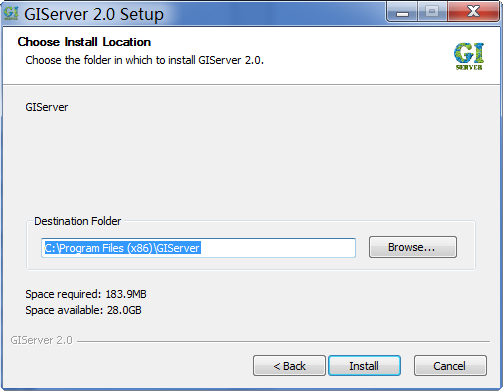
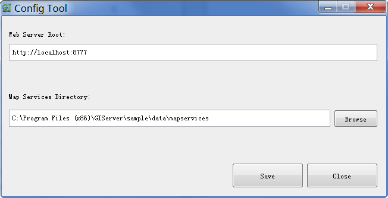
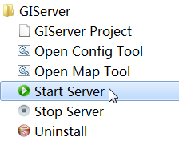

|
For easier use, GIServer pack Java runtim, web server and giserver application to a windows installation,
with it we can install GIServer quickly.
- Download Installation
- Download the installation file from http://sourceforge.net/projects/giserver/files/,
the file name will be "giserver-[version]-installer.zip", unzip it.
- Install Program Files
- Install all programe files:
- 
- Configure After Installation
- After program files installed, Config Tool will be started, it can help you to change some important configurations:
- 
- Start Server
- Save changed configurations and close Config Tool, start server by shortcut:
- 
|
|